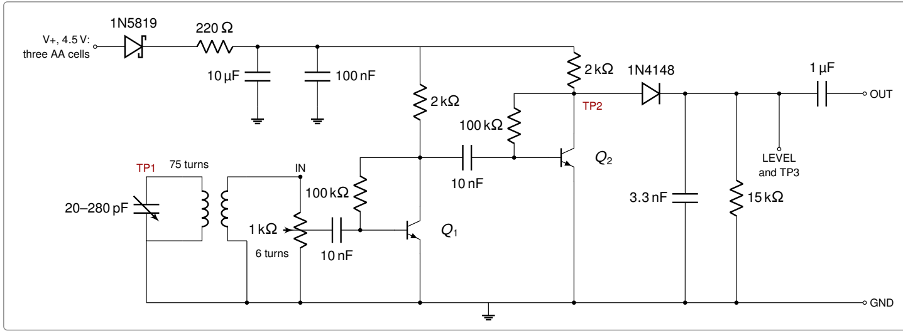

Milestone 02 / Two-stage RF amplifier
RF amplifier
01 / WINDINGDrag to orbit · scroll to zoom
Loading assembly…
3D is unavailable in this browser.
The wiring view and complete instructions remain available.
CONNECTION MAPElectrical connections · not to scale
BENCH PREDICTIONSTeaching model · not measured
Model equations & assumptions
FIG. 01
Inspect
Reference / M2
Board 1′, from tank to sound
Figure 3 from the brief. VR is after the protection diode and 220 Ω.

- TP1 Tank top
- M1’s 75-turn winding and variable capacitor. No direct wire to IN.
- TP2 Amplified RF
- Q2 collector, its 2 kΩ and 100 kΩ resistors, and the detector anode.
- TP3 / LEVEL Detector DC
- 1N4148 band, 15 kΩ, 3.3 nF and the input side of 1 µF. OUT is after 1 µF.
Field notes / M2
Our build record
Tables 4–7 · enter actual measurements after the bench work. Entries stay in this browser when storage is available.
For the current step